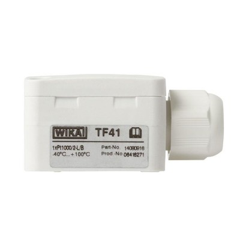
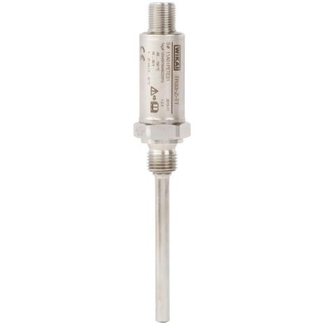

WIKA Model CPH7000
Measurement technology for the iron and steel industry
Giải pháp đo lường WIKA theo ngành: chiller, bơm nhiệt, năng lượng mặt trời, nhựa.
Chọn model để xem thông số, ứng dụng, datasheet và gửi yêu cầu báo giá WIKA chính hãng.
Measurement technology for the iron and steel industry

Linear drives

Curing presses

Chillers

Rooftops

Heat pumps

Machine tools

Heating systems

Filter systems
Wind turbines